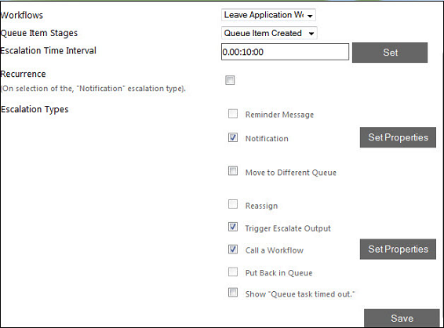

No
Click the Escalation tab to open the window for setting escalation properties.
The following image shows the Escalation tab of the Queue Management window:
This window displays escalations that have already been set in a grid. The details displayed include the escalation stage, time interval, whether the escalation should recur or not, and the escalation type. You can click on the Add Escalation button to add a new escalation. This will open the window shown below, where you can specify the escalation settings.

You can specify the name of the Workflow corresponding to the queue. Next specify the stage in the queue at which the escalation should be triggered. You can select these two options from the respective drop down. Now, enter the Escalation Time Interval in the corresponding field. Select the Recurrence check box to set the escalation to recur.
After specifying the escalation settings, you need to specify and configure the escalation type using the controls under Escalation Types. The following check boxes corresponding to the different escalation types are available for selection:
The options that can be accessed depend on the Queue stage selected earlier. For example, if the Queue stage selected is “Queue Item Created” then the options available are Notification, Move To Different Queue, Trigger Escalate Output, and Call a Workflow.
Reminder Message: To set the Reminder Message, click on the corresponding check box to select it and then click on the Set Properties button. This opens the window shown below.
Notification: To set the Notification escalation type, click on the corresponding check box to select it. Then click on the Set Properties button to set the properties. This opens the following window: